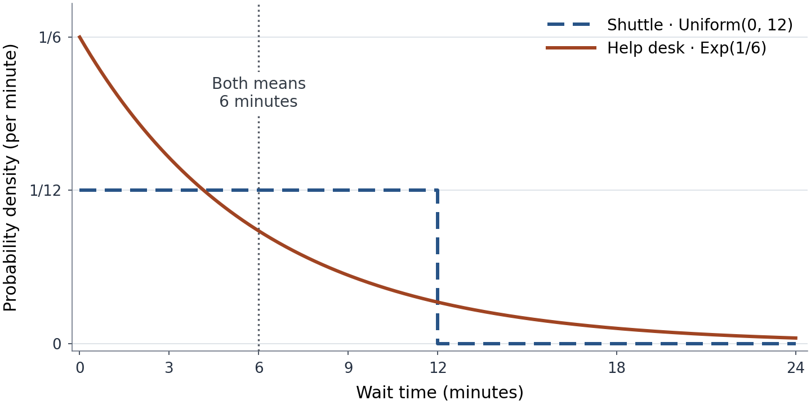

MSC 201 · Statistics Lecture Notes
5.2–5.3: Comparing Uniform and Exponential Distributions
Two people can both have a six-minute average wait and face very different chances of a short or long wait. We’ll compare a student waiting for a scheduled shuttle and a campus IT worker waiting for the next call.
Double-click or double-tap the space beneath a question to show or hide its answer. With a keyboard, focus that space and press Enter or Space.
5.2 Uniform waiting time: The campus shuttle
A shuttle arrives at a stop exactly every 12 minutes. A student arrives at a random point in that 12-minute cycle, with no part of the cycle favored. Let U be the number of minutes from the student’s arrival until the next shuttle.
Arriving three minutes earlier in the cycle makes the wait three minutes longer. With arrival times spread evenly across the cycle, the possible waits are spread evenly from 0 to 12 minutes. We write U ∼ Uniform(0, 12). The density is a rectangle of width 12 and height 1/12 per minute, so the total area is 1.
How long will the student wait?
- Find the probability of a wait of at most 3 minutes.
- Find the probability of a wait between 3 and 9 minutes.
- Find the expected wait and the standard deviation.
- The interval from 0 to 3 uses 3 of the 12 minutes. Its area is 3/12 = 25%.
- The interval from 3 to 9 is 6 minutes wide. Its area is 6/12 = 50%.
- The expected value is the long-run mean. The rectangle is symmetric around (0 + 12)/2 = 6 minutes. The standard deviation is 12/√12 ≈ 3.46 minutes. Standard deviation measures the spread in the original units.
Change the shuttle timing
- Suppose the shuttle comes every 24 minutes instead. What are the new chance of waiting at most 3 minutes, mean, and standard deviation?
- Return to the original shuttle. A student leaves class and walks exactly 2 minutes to the stop before starting the same randomly timed shuttle wait. How does including the walk affect the mean and standard deviation of the total time?
- The favorable interval still has width 3. The full width is now 24, giving 3/24 = 12.5%. The midpoint is 12 minutes. Doubling the width doubles the standard deviation to about 6.93 minutes.
- The support shifts from [0, 12] to [2, 14]. The mean moves up to 8 minutes. Adding 2 minutes to every wait preserves the differences from the mean, so the standard deviation stays at about 3.46 minutes.
5.3 Exponential waiting time: The campus IT help desk
During a steady part of the day, calls arrive randomly at an average rate of 10 calls per hour. Assume calls arrive one at a time, the numbers of calls in disjoint time intervals are independent, and the rate stays the same. Let E be the time in minutes from now until the next call.
The rate is λ = 10/60 = 1/6 call per minute. With a fixed rate, short waits have higher density, and a stretch with no calls can last arbitrarily long. We write E ∼ Exp(1/6). The density starts at 1/6 per minute and falls toward zero. Its right-tail area, P(E > t), is e−λt. Here t is in minutes, so the tail is e−t/6.
Think back to the geometric model. The chance of still waiting after a number of trials is the chance of no success in those trials. Here we measure elapsed time, and the chance of still waiting is the chance that no call has arrived in that time.
How long until the next call?
- Find the probability of a wait of at most 3 minutes.
- Find the probability of a wait between 3 and 9 minutes.
- Find the expected wait and the standard deviation.
Use e−0.5 ≈ 0.6065 and e−1.5 ≈ 0.2231.
- Subtract the right tail from 1. P(E ≤ 3) = 1 − 0.6065 = 0.3935, or about 39.4%.
- Start with the area to the right of 3 and subtract the area to the right of 9. P(3 < E < 9) ≈ 0.6065 − 0.2231 = 0.3834, or about 38.3%.
- At 10 calls per 60 minutes, the average time per call is 60/10 = 6 minutes. In general, the expected wait is 1/λ. For an exponential wait, the standard deviation equals the mean, so it is also 6 minutes.
Change the call rate
- If the rate doubles to 20 calls per hour, what happens to the mean and standard deviation? What is the chance of receiving a call within 3 minutes? Use e−1 ≈ 0.3679.
- On another shift, the mean wait is 4 minutes. What are the rate per hour and the standard deviation?
- The rate becomes 1/3 call per minute. Both the mean and standard deviation halve to 3 minutes. The chance of a call within 3 minutes is 1 − 0.3679 = 0.6321, or about 63.2%.
- A mean wait of 4 minutes gives 60/4 = 15 calls per hour. The standard deviation is 4 minutes.
Compare the two six-minute waits

| Feature | Scheduled shuttle | Help-desk calls |
|---|---|---|
| Possible waits | 0 to 12 minutes | 0 minutes and up, with no upper bound |
| Density shape | Flat rectangle, symmetric about 6 | Decreasing curve with a long right tail |
| Find a probability | Width within the support ÷ total width | Use the right tail e−λt, then subtract areas as needed |
| Expected value (mean) | Midpoint (0 + 12)/2 = 6 minutes | Reciprocal rate 1/λ = 6 minutes |
| Standard deviation | About 3.46 minutes, proportional to the interval width | 6 minutes, equal to the mean |
| Chance of finishing by the mean | 50% | About 63.2% |
| Chance of waiting beyond 12 minutes | 0% | e−2 ≈ 13.5% |
For Uniform(a, b), the mean is (a + b)/2 and the standard deviation is (b − a)/√12. To compare the spread of two uniform models, compare their widths. For Exp(λ), use μ = σ = 1/λ. OpenStax uses m for the same rate.
Which wait is more likely to end by its mean?
For the shuttle and the calls, each mean is 6 minutes. Use the probabilities in the table to place each median. Why can the help desk have the same mean as the shuttle even though more than half of its waits end before 6 minutes?
The shuttle median is 6 minutes, with half the area on each side. The help-desk median is below 6 minutes because the area already exceeds 50% by that time. The longer waits in the right tail pull the help desk’s mean above its median.
You’ve already waited 8 minutes
In each original example, find the chance of waiting more than 3 additional minutes, given that nothing has arrived in the first 8 minutes. Compare that with the chance of waiting more than 3 minutes from a fresh start.
- Shuttle: The total wait is now known to be between 8 and 12 minutes. More than 3 additional minutes means a total longer than 11. The remaining interval is 4 minutes wide, and only the final minute qualifies. The probability is 1/4 = 25%, compared with 9/12 = 75% from a fresh start.
- Help desk: Under the independent, constant-rate model, the next three minutes have the same chance of no calls as any fresh three-minute interval. The probability is e−0.5 ≈ 60.7% either way. This is the memoryless property.